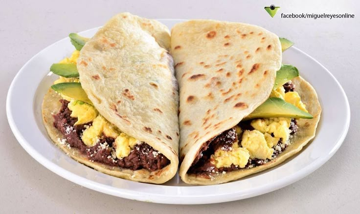

Baleadas
Uno de los platos más populares. Son tortillas de harina de trigo rellenas con frijoles fritos, queso rallado y mantequilla. Se pueden acompañar con huevo, carne o aguacate.

Sopa de Caracol
Plato típico de la costa norte. Lleva caracol de mar, leche de coco, yuca, plátano, maíz y especias. Es muy sabrosa y representativa del país.

Pollo con Tajadas
Pollo frito acompañado de tajadas de plátano verde, repollo, salsa de tomate y mayonesa